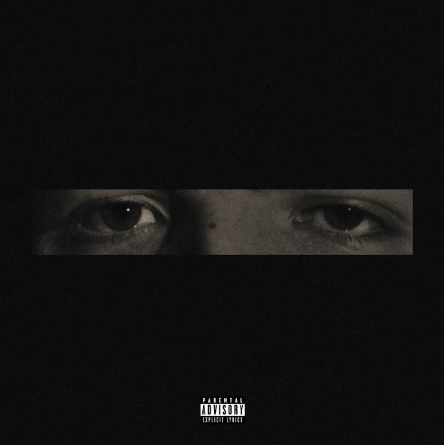
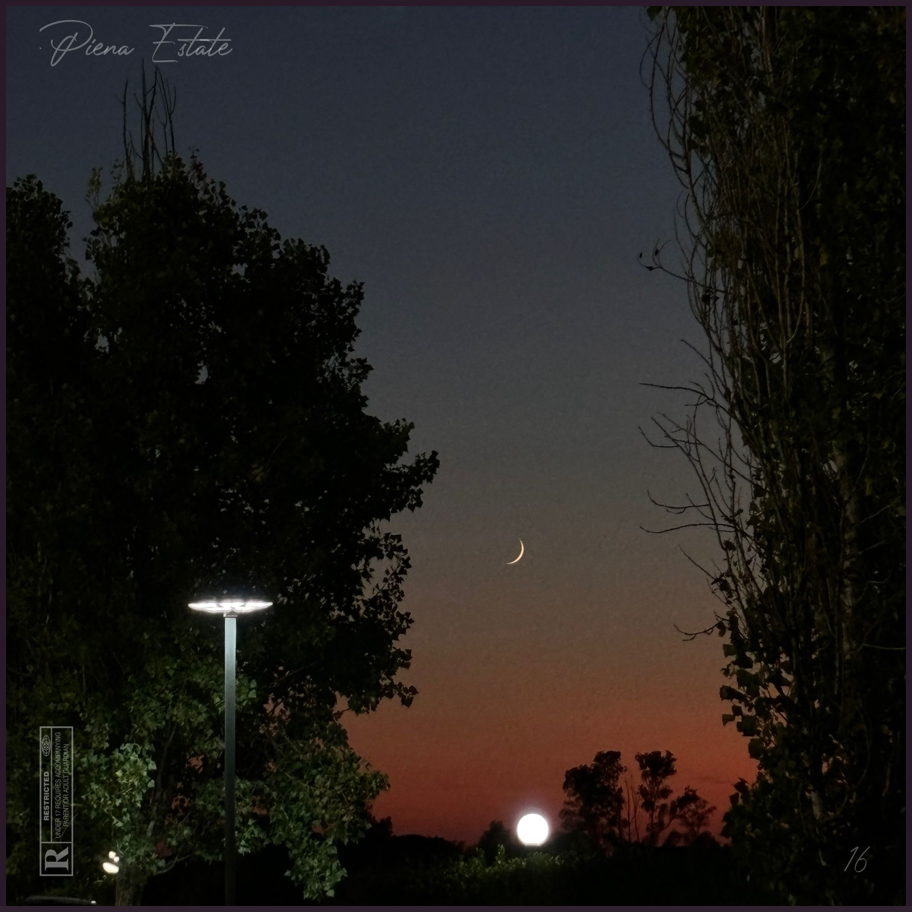
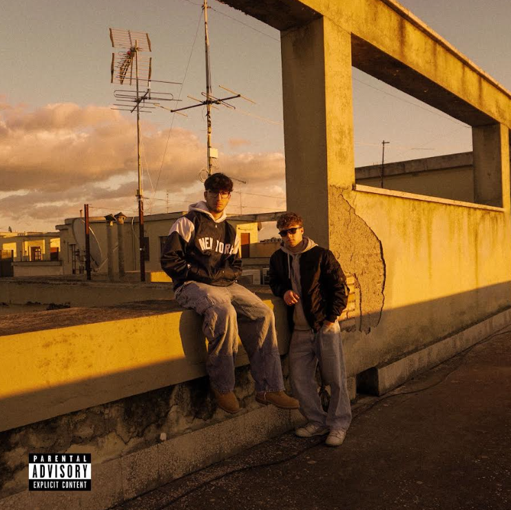
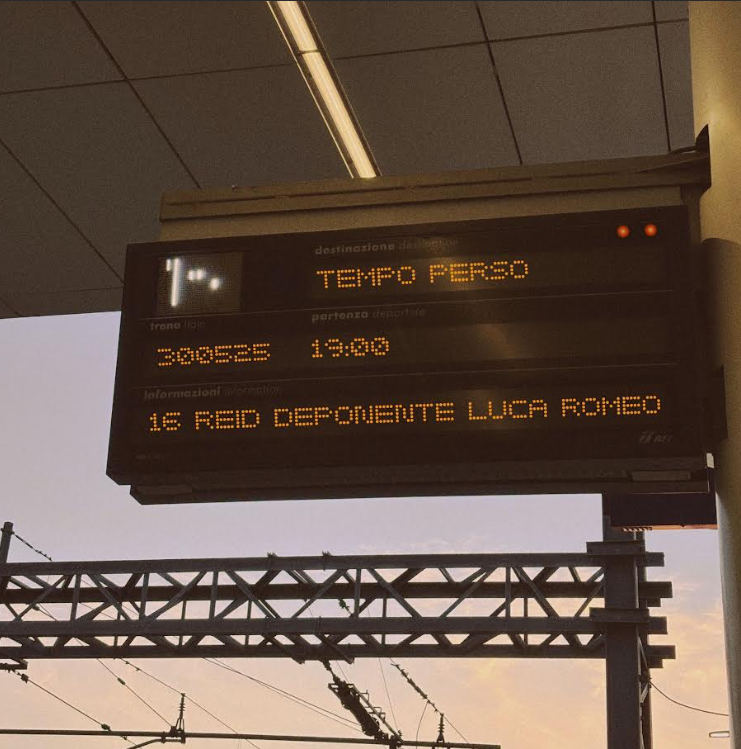

Biografia
Carlo Capitelli, meglio conosciuto come 16Reid, è un giovane rapper emergente
Nato e cresciuto a Latina ha iniziato a farsi strada nella scena rap con il suo talento e la sua autenticità.
ARTISTA VERIFICATO
60 ascoltatori mensili

Neanche Io
Piena Estate
Calmo
Tempo PersoCarlo Capitelli, meglio conosciuto come 16Reid, è un giovane rapper emergente
Nato e cresciuto a Latina ha iniziato a farsi strada nella scena rap con il suo talento e la sua autenticità.